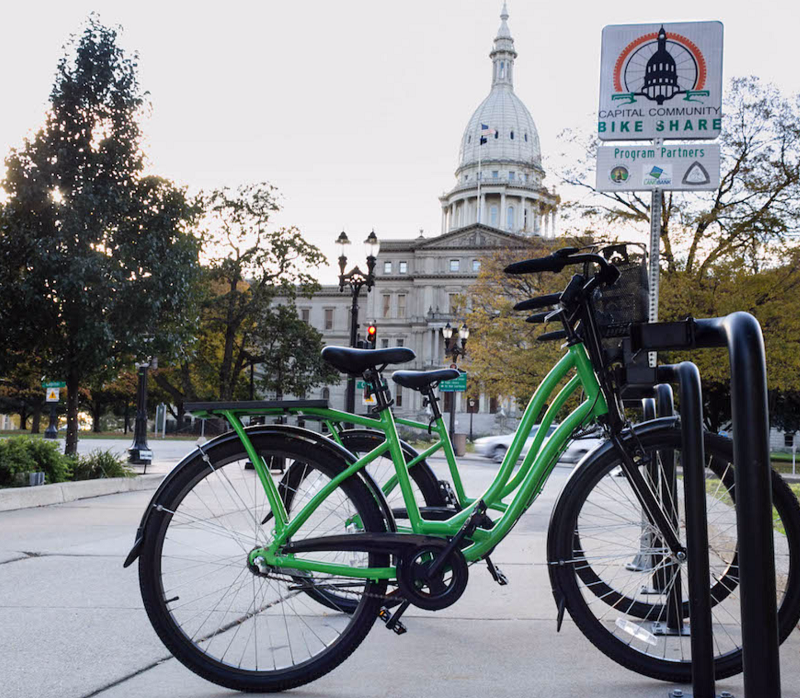
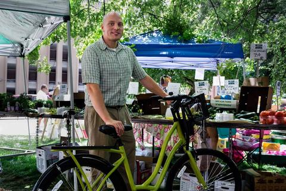

November, 2011 - May, 2013
Product Overview: Bike sharing systems that put the rental and security technology on the bicycle, not at a kiosk.
Our first bikes ready for use in Lansing, MI

If you've been reading through these in chronological order, we're going to take a quick step back in time. Once I made my way into the University of Michigan, I shut down my high school business, Pointe Computer Tech, and focused on my new life in Ann Arbor. I joined a whole array of startup-related extracurriculars, interned at GE and Boeing, and eventually signed up for the College of Engineering's entrepreneurial practicum. In this class you teamed up with other students from various different degree programs and were challenged to build a business together. My team focused on the burgeoning market of bike sharing, and asked the question: "Why hasn't bike sharing expanded to a city like Ann Arbor, what's stopping it?"
Over the next year and a half I worked with my co-founder, Ansgar, to build new, better bike sharing technology that would take the industry to the next level. While I was there we brought in pre-seed funding, onboarded our first customer, submitted for a patent that was eventually accepted, and launched our beta product for public use. We grew the team from just the two of us to include 10 other people with varying skillsets and 6 partner companies to help manufacture the bikes, bike racks, electronics, and other critical components.
Later model bike in the hands of a happy customer

I left after that year and a half in order to pursue my Master's degree and handed over most of my ownership of the company to Ansgar. Since then I have been only minimally involved but have taken great joy in seeing what we worked on evolve and grow. He led the company to raise a $200K seed round of investment and eventually sold the company to one of the largest bike sharing providers in the US. I also consider my time at A2B Bikeshare to be a cornerstone for receiving the University of Michigan's $5,000 award for entrepreneurial leadership.
Continue to read more about joining the Venture for America fellowship.